1.0 认识界面与视图操作
第一次打开 Fusion，满屏的按钮会让人发懵。其实界面就分几块：上面找命令、左边看目录、中间看模型、下面看历史。这一页先认清每一块，再练会转视角、选东西、找命令这三个最基本的动作，最后把单位和建模方向确认好。
界面全貌#
下图是打开一个设计（就是后面要做的手机支架）之后的样子。把鼠标移到图上带编号的区域，下面会显示它叫什么、干什么用：
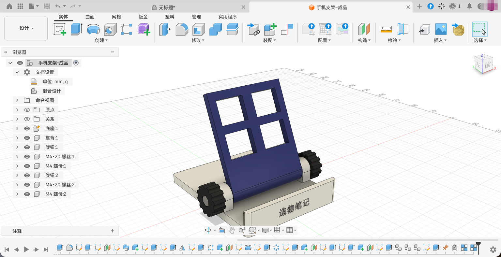
1
2
3
4
5
6
7
8
9
10
11
👆 把鼠标移到图上带编号的区域（或点击下面的按钮），这里会显示它的名字和用途。
图 1.0-1Fusion 设计界面（鼠标移上去看说明）
工作区和工具栏选项卡#
左上角的「设计 ▾」是工作区切换。点开能看到 Fusion 的全部工作区：
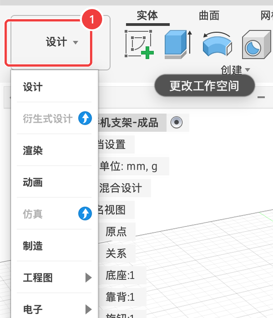
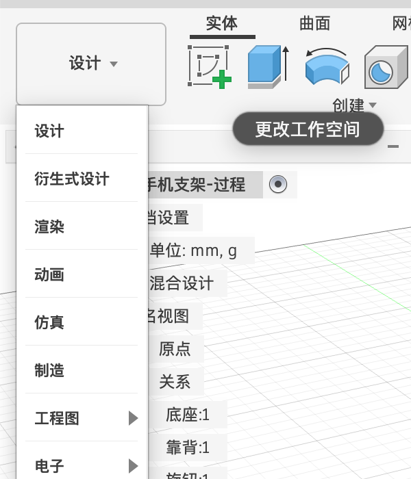
| 工作区 | 干什么 | 本书哪里讲 |
|---|---|---|
| 设计 | 建模、装配、联接，大部分时间都在这里 | 第 1、3～11 章 |
| 衍生式设计 | 告诉软件受力条件，让它自动“长”出形状。个人版不能用（菜单里有蓝色升级标记），教育版 / 商业版可以 | 第 17 章 |
| 渲染 | 出照片级的效果图 | 第 12 章 |
| 动画 | 做爆炸图、装配动画 | 第 13 章 |
| 仿真 | 算零件受力会不会断。个人版不能用，教育版 / 商业版可以 | 第 17 章 |
| 制造 | 给 CNC 机床、3D 打印机生成加工路径 | 第 15、16 章 |
| 工程图 | 出带尺寸的二维图纸 | 第 14 章 |
| 电子 | 画电路板（本站电路部分用嘉立创EDA） | 第 18 章 |
在「设计」工作区里，工具栏上方还有一排选项卡，每个选项卡下面是一套不同的工具。点下面的按钮切换看看：

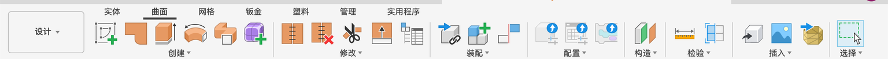
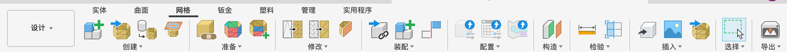
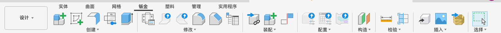
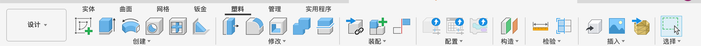
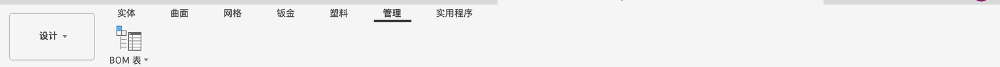
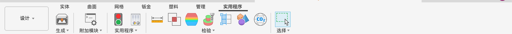
工具栏按功能分成几组：创建、修改、装配、配置、构造、检验、插入、选择。组里只露出最常用的几个图标，点组名后面的 ▾ 才能看到全部命令。鼠标在图标上停 1～2 秒，会弹出命令名字和示意图（见 1.2 的图）。
浏览器：设计的目录#
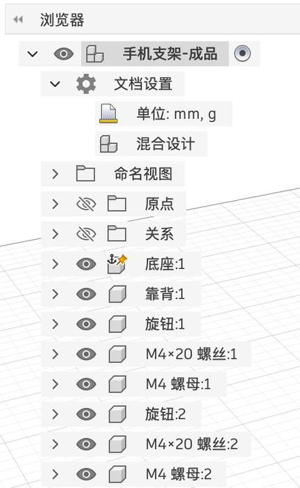
| 条目 | 是什么 |
|---|---|
| 最上面一行（手机支架-成品） | 整个设计本身，叫“根零部件”。后面的小圆点表示它是当前激活的（新画的东西归它） |
| 文档设置 | 单位（mm, g）、设计类型（混合设计） |
| 命名视图 | 保存下来的视角，比如“前”“上”“主视图” |
| 原点 | 坐标原点、X / Y / Z 三根轴和三个基准平面。默认隐藏，画第一张草图时会自动显示 |
| 关系 | 零件之间的联接、固定等关系（1.5 和案例 P8 讲） |
| 底座:1、靠背:1…… | 一个个零部件。“:1”“:2”是同一个零件的第几份（左右两个旋钮其实是同一个零件的两份） |
- 每行前面的小眼睛：点一下隐藏 / 显示。
- ▸ 小三角：展开看里面的实体、草图等。
- 右键：重命名、删除、激活、固定、外观……很多操作都从这里开始。
转视角：鼠标怎么用#
| 想做什么 | 三键鼠标（Fusion 默认设置） |
|---|---|
| 放大 / 缩小 | 滚动滚轮（以鼠标所在位置为中心缩放） |
| 平移（把画面往旁边挪） | 按住中键拖动 |
| 旋转视角（绕着模型转） | 按住 ⇧ + 按住中键拖动 |
| 整个模型放进窗口 | 双击中键，或点导航栏里的「适合窗口」 |
除了鼠标，还有两个工具：
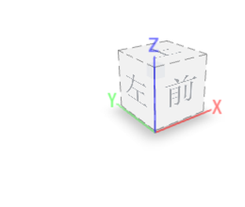
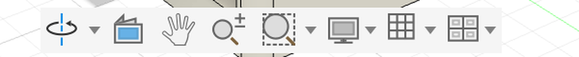
导航栏（从左到右）
| 图标 | 作用 |
|---|---|
| 动态观察 ▾ | 点一下后，用左键拖动就能旋转视角（不用中键也行）。▾ 里可以选“自由动态观察”（不受上下方向限制） |
| 观察 | 选一个平面，视角正对它 |
| 平移（小手） | 点一下后左键拖动平移 |
| 缩放 / 适合窗口 ▾ | 缩放；“适合窗口”把所有东西放进画面 |
| 显示设置 ▾ | 视觉样式（着色 / 线框等）、环境、效果、对象可见性、相机（透视 / 正交）、进入全屏 |
| 栅格和捕捉 ▾ | 布局栅格、捕捉到栅格、增量移动 |
| 视口 ▾ | 分成多个视口同时从几个方向看 |
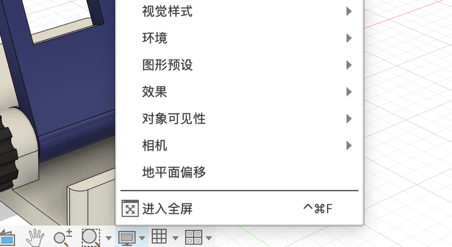
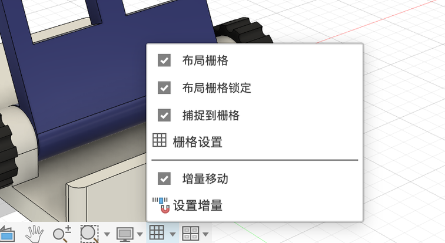
选择东西#
- 单击：选中鼠标下面的面、边或点。鼠标移上去时会先高亮，看清楚再点。
- 加选：按住 ⇧ 再点，可以选多个；按住 ⇧ 点已选中的，就是取消选择。
- 取消全部选择：点画布空白处，或按 esc。
- 框选：在空白处按住左键拉一个框。方向不同，效果不同：
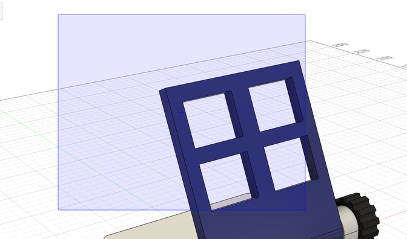
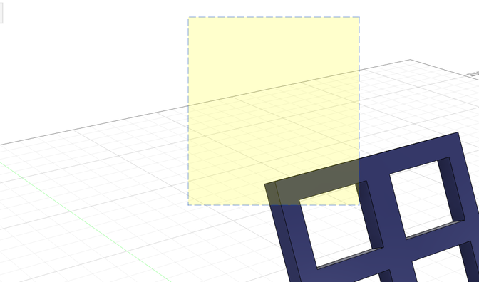
找命令的三种方法#
- 工具栏：最直观。不知道在哪个组就点各组的 ▾ 翻一翻。
- 快捷键：常用命令都有单字母快捷键，菜单里命令名后面会写着，比如拉伸 E、孔 H、草图尺寸 D、两点矩形 R、圆 C。按 S 会弹出一个搜索框，输入命令名就能找到（中文、英文都行）。
- 右键圆盘菜单：在画布上点右键，会出现一个圆盘（叫标记菜单）加一个小列表，里面是最常用的命令。在不同的对象上右键，内容会变。
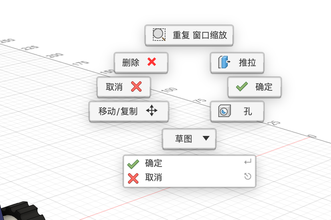
数据面板：文件存在哪#
Fusion 的文件默认存在 Autodesk 的云端，而不是你电脑上的某个文件夹。点左上角的九宫格图标打开数据面板：
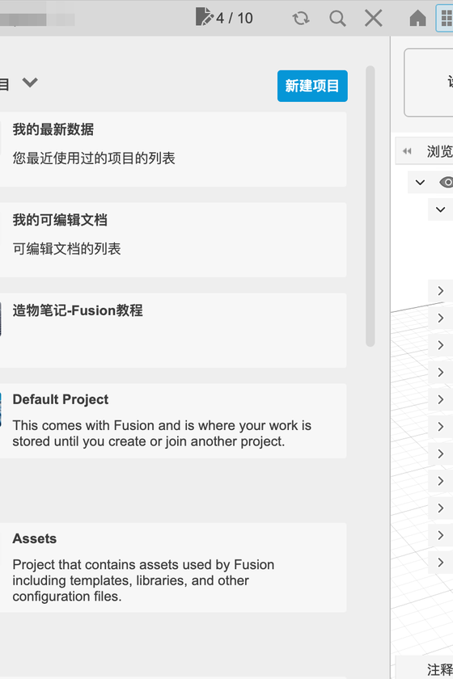
- 项目相当于一个文件夹，设计相当于里面的文件。默认有一个「Default Project」，你也可以新建项目（本教程的文件都放在「造物笔记-Fusion教程」项目里）。
- 右上角的 4 / 10 是个人版的限制：最多同时有 10 个“可编辑”的设计，超了的只能看不能改。详见 0.3。
- 保存时 Fusion 会自动记版本（v1、v2……），能随时退回旧版本。
开始之前确认两项设置#
点右上角头像 →「首选项」（也可以在菜单栏「Fusion → 首选项」）。对话框左边是分类，右边是设置项：
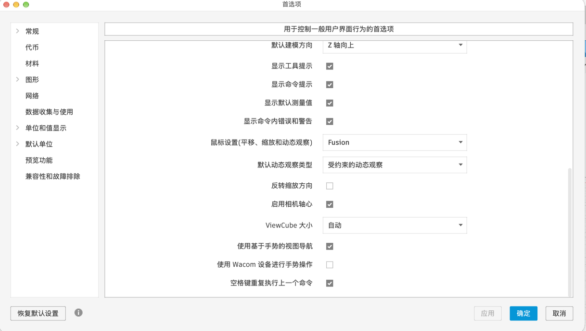
不用全看懂，只确认两项：
- 默认建模方向：Z 轴向上。本教程统一用 Z 轴朝上（和 3D 打印的切片软件一致）。如果你的是“Y 轴向上”，改成“Z 轴向上”。
- 默认单位：mm。左边点「默认单位 → 设计」，确认“新设计的默认单位”是 mm。

首选项 · 常规（常用项）
| 设置 | 含义 | 建议 |
|---|---|---|
| 用户语言 | 界面语言。改完要重启 Fusion | 中文（简体） |
| 默认设计类型 | 新建设计时默认选哪种（0.3 讲几种类型的区别） | 保持默认 |
| 自动恢复备份间隔 | 每隔几分钟在本地存一份“万一崩溃”用的备份 | 5 分钟 |
| 关闭时自动保存 | 关文件时自动保存 | 按习惯 |
| 默认建模方向 | 哪根轴朝上 | Z 轴向上 |
| 显示工具提示 / 命令提示 | 鼠标停在按钮上弹出说明 | 新手建议保持勾选 |
| 鼠标设置（平移、缩放和动态观察） | 鼠标操作模仿哪个软件的习惯，下拉框里还能选其他软件 | 保持「Fusion」，本教程按它写 |
| 反转缩放方向 | 滚轮往哪边是放大 | 按习惯 |
| 使用基于手势视图导航 | 用触控板手势转视角 | 用触控板的人可以打开 |
| 空格键重复执行上一个命令 | 按空格重复刚才的命令 | 按习惯 |
首选项 · 常规 → 设计（几项与建模有关）
| 设置 | 含义 | 建议 |
|---|---|---|
| 默认建模模式 | 「参数化建模」：记录每一步（有时间轴），改前面的尺寸后面会跟着变 | 保持参数化建模 |
| 自动投影边以用作参考 | 画草图时引用已有实体的边，会自动“抄”到草图上 | 保持默认 |
| 自动查看草图 | 新建草图时视角自动转到正对草图平面 | 新手建议勾选 |
| 在创建后编辑尺寸 | 标完尺寸立即弹出输入框 | 保持勾选 |
| 创建特征时自动隐藏草图 | 拉伸完以后自动把草图藏起来 | 保持勾选 |
其他设置项第 3 章逐项讲，设置完点「确定」。
- 我能说出工具栏、浏览器、画布、时间轴分别在哪
- 我会用滚轮缩放、中键平移、⇧ + 中键旋转视角
- 我知道从左往右框选和从右往左框选的区别
- 我确认了默认建模方向是 Z 轴向上、单位是 mm